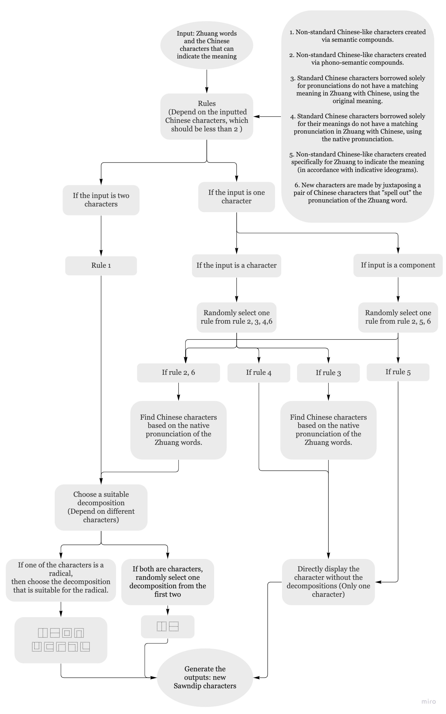
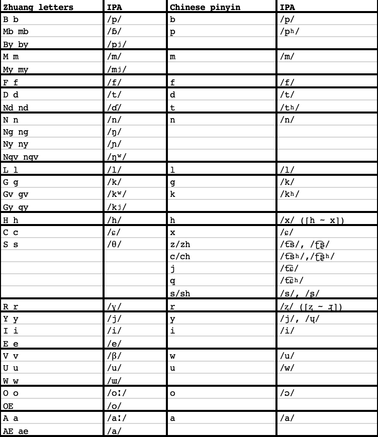

Generative Language Art Project
Sawndip is a logographic Chinese-derived writing system traditionally used by Tai-speaking people in Southern China and Northern Vietnam including ethnic Zhuang groups. Due to the lack of standardization, there are many variations of Sawndip characters. Generative Sawndip is a generative language art project using computer algorithms to create new Sawndip characters for the Zhuang minority language. Inspired by critical software art and generative art, I explored the possibilities between computer programming and critical social issues to find innovative ways of connecting underrepresented ethnic minority cultures with modern computer techniques. By using language data and following the historical rules of making Sawndip characters, the project generates the non-existing characters showing the nature of the Sawndip writing system and the Zhuang language culture. As a half Chinese and half Zhuang, the project is also to explore my cultural heritage and identity by making my version of Sawndip characters.

First of all, when inputting the Zhuang word, I also input a Chinese character (or two) that can indicate the same meaning of the Zhuang word. Therefore, later on, in any situation that needs to use the meaning-match Chinese characters, the inputted Chinese characters will be used. If you want to try my code but do not know Chinese, you can check this link, which is a p5.js sketch that helps you find the meaning-matching Chinese characters.
For the pronunciation-matching character, I use "regular expression” to search for letters. Let's take the word "Bouxcuengh" (the Zhuang people) as an example. I use the International Phonetic Alphabets (IPA) of the word, which is the "sound" entry in the JSON file. First, input the sound of the word as a string value. For "Bouxcuengh", it's "/pou˦˨ ɕuːŋ˧/". Second, since Zhuang words can be both monosyllabic and multisyllabic, I check if the sound string contains "spaces". If yes, then it's a multisyllabic word, so "Bouxcuengh" is a multisyllabic word. Third, according to Soundex, a phonetic algorithm, consonants mainly affect pronunciation similarity. Therefore, I match the consonants of syllables for pronunciation or the first IPA letter if the syllable doesn't have a consonant. Here is the table to show how the Zhuang alphabets match with the Chinese pinyin. Some letters may be correspondent to multiple pinyin letters, so the algorithm will randomly choose one to match.

You need “character_generator_code.js” and the JSON files in “Sorted_data”.